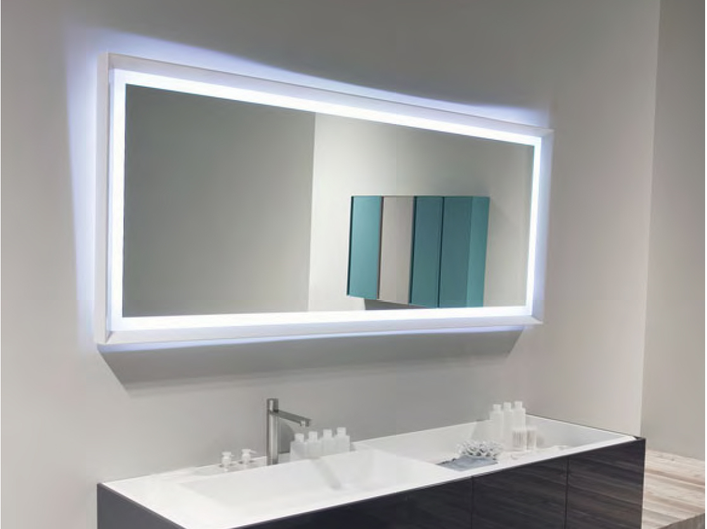
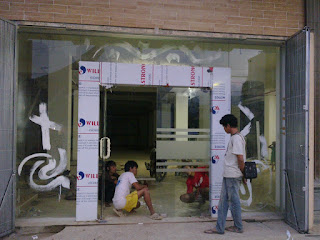
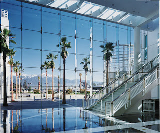
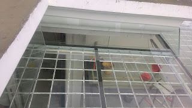
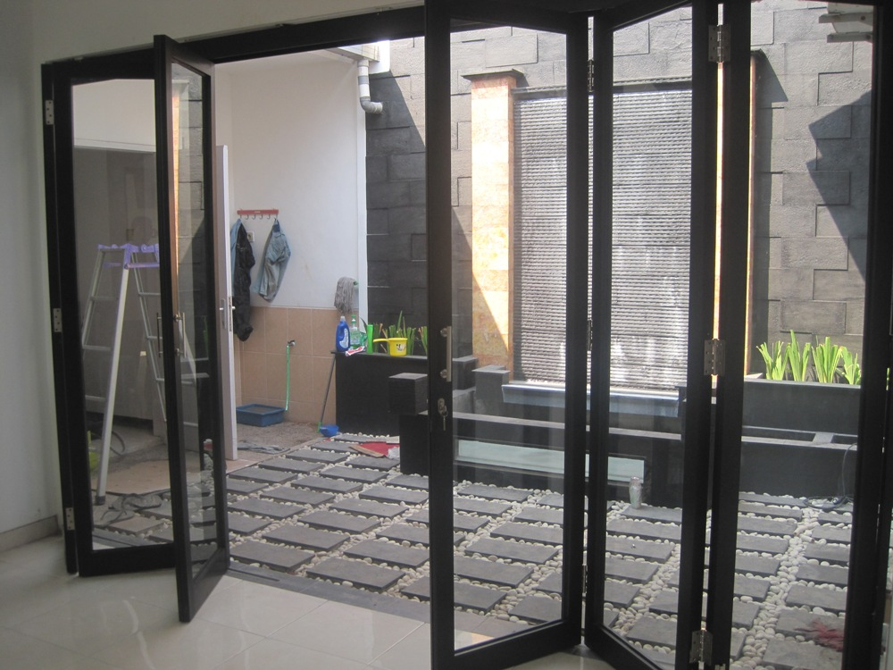

Semakin berkembangnya dunia pembangunan, maka hadir banyak material penambah yang melengkapi estetika sebuah banguanan. Tetapi, tidak hanya keindahan tapi juga keamanan bagi penghuni di dalamnya. Tidak halnya hadir beragam material kaca dan juga lantai yang kian melengkapi nilai estetika sebuah bangunan. Berikut sedikit penjelasan yang bisa anda baca mengenai sebagai rujukan and ajika akan membangun rumah maupun tempat usaha.
Tipe-variasi kaca diantara lain kaca tempered, kaca shower, railing kaca, kanopi kaca dan masih banyak lagi.
Jual Kaca Cermin di Bau-bau

Kaca cermin sekarang tidak cuma diterapkan sebagai aksesoris untuk perabotan seperti lemari rias. Lihat saja banyak produk cermin yang dijadikan dengan desain unik dan menarik. Ada sebagian keunggulannya. Cermin dengan berbagai ukuran juga tersedia. Pun, ada juga desain kaca cermin Bau-bau yang unik. Bahkan juga komponen tepi. Sementara itu, saat diperhatikan dari luar, kaca ini reflektif. Anda seolah sedang bercermin.
Sekiranya sebagai bahan untuk pintu kaca, kaca cermin Bau-bau ini juga masih diaplikasikan sebagai aksesoris cermin. Bahkan, Anda dapat gunakan kaca cermin Bau-bau ini sekaligus sebagai material utama, seperti sebagai pintu lemari di kamar tidur Anda. Atau Anda bisa memilih cermin yang dibangkai dengan beragam variasi bahan seperti kayu, aluminum, plastik, dan bahan lainnya. Dengan ragam kaca ini, orang yang berada di luar ruangan tak bisa memandang apa yang ada di dalam ruangan. Tak figur lemari baju di mana bagian pintunya terbuat dari kaca cermin Bau-bau. Atau Anda dapat buat pintu kaca cermin Bau-bau. Harga yang terjangkau dan mutu terbaik adalah ciri khas dari dis.or.id. Melainkan kunjungi dan peroleh informasi menarik mengenai kaca tempered Bau-bau hasrat anda. Tapi kunjungi dis.or.id untuk mendapatkan penawaran menarik.
Info Pemesanan Selengkapnya
Google Maps: https://www.google.com/maps/d/u/0/viewer?mid=1HNPQwTg5M-VmcXHvNbVncTuxY7ALbdIQ&ll=-7.27380280025364%2C112.65243155000007&z=18
Note: https://www.facebook.com/notes/distributor-of-industrial-supply/pabrik-supplier-kaca-cermin/1785720801727799/
Event: https://www.facebook.com/events/135275393812568/
Distributor & Supplier Pintu Kaca

Pintu kaca ialah hal yang cukup penting dimiliki oleh sebuah bangunan. Ada banyak desain pintu kaca yang bisa kita temui seperti pintu kaca berbentuk sliding (geser) atau folding (lipat). Tersedia juga almunium dan kayu seandainya Anda ingin memiliki pintu kaca dengan bingkai. Tenaga variasi kaca yang bisa Anda pilih untuk pintu kaca Anda seperti kaca tempered yang sedang booming atau kaca non-tempered yang harganya lebih relatif murah. Desain hal yang demikian bisa disesuaikan dengan konsep properti Anda. Anda tinggal tentukan saja figur pintu kaca seperti apa yang mau Anda miliki. Dalam hal ini, terdapat beberapa macam kaca dengan kualitas yang terbaik. Sekarang paling banyak diminati saat ini adalah kaca tempered karena jauh lebih kuat dan bendung lama.
Kalau spesialis yang amat profesional sehingga amat siap untuk menjadikan pintu kaca seperti apa yang mau Anda miliki.
Terdapat juga opsi lain berapa kaca non-tempered yang harganya relatif lebih murah. Anda dapat memilih kaca tempered yang kini ini sedang naik daun. Untuk budget yang lebih sedikit, Anda bisa memilih macam kaca non-tempered.
Jasa Pemasangan Railing Kaca
Railing kaca kini semakin banyak pilihannya. Mungkin hal ini disebabkan semakin banyak pemilik rumah yang ingin menonjolkan sebuah desain interior rumah yang benar-benar minimalis. Karenanya dari itu, komponen-komponen tangga tidak lagi dihasilkan dengan bahan kayu. Pastikan bagian tersebut terbuat dari bahan aluminum yang kuat. Namun, Anda patut pastikan railing kaca berkwalitas terbaik.
Anda bisa pertimbangkan untuk menggunakan kaca tempered. Ada kaca tempered yang sekarang diminati banyak orang. Bila itu, sekiranya terjadi musibah gempa bumi dan ternyata kaca pecah, kaca tempered ini akan pecah dan membentuk pecahan yang sungguh-sungguh kecil dan lembut. Dengan demikian, pecahan tak akan melukai siapa saja. Pecahannya benar-benar kecil dan lembut sehingga tidak akan melukai siapa saja yang terkena pecahan. Ini menetapkan kuatnya konstruksi railing kaca.
Kini dis.or.id telah menyediakan railing kaca berkulitas dan bermutu. Harga yang betul-betul ekonomis serta kwalitas terbaik yang sudah terjamin membikin anda tidak akan menyesal membeli railing kaca di dis.or.id. Tentu dengan harga yang murah melainkan konsisten berkelas.
Distributor, Supplier & Jasa Pasang Kanopi Kaca

Kanopi kaca semakin banyak diminati karena kini telah banyak bangunan yang menerapkan bahan kaca untuk lebih mempercantik tampilan rumah. Anda dapat memilih kanopi kaca yang layak dengan kebutuhan dan keinginan anda. Dan sensasi mandi menjadi lebih asik untuk dinikmati. Jadi telah tidak heran lagi segala orang berkeinginan mencari harga yang betul-betul kompetitif untuk menyesuaikan budget atau anggaran mereka masing – masing untuk membikin produk canopy kaca. Di samping pintu kaca shower akan membikin kamar mandi kecil tampak lebih besar. Pada atap akrilik, penyerapan cahaya yang terjadi demikian kecil sehingga meskipun ketebalannya bertambah, sifat transparannya tidak banyak berubah. Atap akrilik atau bisa juga disebut atap kaca acrylic ini banyak ditemukan di sebuah bangunan rumah, seperti ruko, apartemen, cafe, mall, sampai bangunan gedung.
Dis.or.id dapat menolong anda yang berharap memasang atap kaca skylight pada gedung, dengan berbagai kelebihan yang dapat anda temukan dengan memanfaatkan jasa yang di tawarkan dis.or.id. Ini tampak dari bahan material yang di gunakan dalam pembuatan kanopi kaca. Dis.or.id juga menyediakan jasa pemasangan kanopi kaca yang tentunya dengan bantuan daya professional yang sudah berpengalaman. Sekiranya fungsi utama kanopi sebagai pelindung untuk bangunan hal yang demikian, pemasangan kanopi kaca juga bisa membikin bangunan menjadi menonjol lebih cantik dan menarik, apalagi menggunakan konsep yang sama dengan konsep rumah minimalis. Disana anda akan mendapatkan kanopi kaca yang sesuai dengan berbagai ketebalan dan harga yang cukup terjangkau.
Distributor & Supplier Kaca Shower
Dengan memakai kaca shower pastinya kamar mandi yang dimiliki akan lebih menonjol mewah dan menjadi sekat antara zona basah dan area kering. Shower screen merupakan kotak atau alat yang berfungsi sebagai penyekat ruang khusus untuk kamar mandi. Ada sebagian alasan kenapa Pintu Kaca Shower banyak digunakan salah satunya yaitu kaca lebih nampak bersih dan rapi dan juga lebih mudah dalam perawatannya. Di samping pintu kaca shower akan membikin kamar mandi kecil menonjol lebih besar. Apalagi kini sudah ada toko penjual shower screen yang memasarkan produknya dalam sistem satu paket termasuk pemasangannnya.
Dis.or.id menyediakan kaca shower dengan mutu premium sehingga saat dipasang akan lantas tampak mewah. Disana anda bisa menerima kaca shower yang pastinya sesuai untuk kamar mandi anda. Anda bisa buktikan sendiri.
Distributor, Supplier & Jasa Pasang Kanopi Kaca
Seiring dengan perkembangan zaman di dunia properti, sekarang kanopi kaca sudah berkembang pesat meniru arsitektur modern. Harga dari setiap kaca yang ditawarkan cukup berbagai tergantung kaca yang nanti akan digunakan. Pelaksanaan ini memang desain shower berbahan kaca memang lebih banyak dipakai ketimbang desain shower berbahan tirai. Ada sebagian alasan mengapa Pintu Kaca Shower banyak diaplikasikan salah satunya yakni kaca lebih menonjol bersih dan rapi dan juga lebih mudah dalam perawatannya. Bila tembus pandang, kaca meresap sinar yang masuk sehingga kian tebal kaca maka kian sedikit sinar yang bisa melewatinya, maka sifat transparannya makin berkurang.|Di samping pintu kaca shower akan membuat kamar mandi kecil tampak lebih besar.
Tak anda dikala ini sedang membutuhkan kanopi kaca, anda bisa lantas mengunjungi dis.or.id. Dis.or.id juga menyediakan jasa pemasangan kanopi kaca yang tentunya dengan bantuan kekuatan professional yang telah berpengalaman. Setelah kaca untuk atap kanopi cukup digemari. Tidak anda sedang mencari kanopi kaca, anda bisa seketika mengunjungi dis.or.id. Disana anda akan memperoleh kanopi kaca yang sesuai dengan beraneka ketebalan dan harga yang cukup relatif murah.
Jasa Maintenance Kaca
Salah satunya pelayanan berupa pembersihan gedung yang terbuat dari kaca. Kaca menjadi kusam. Selain hanya membersihkan kaca, jasa maintenance kaca juga dapat mengerjakan perbaikan. Membersihkan komponen kaca gedung Anda yang mungkin rusak, pecah, atau mengalami masalah lainnya.
Dengan menggunakan bahan pembersih yang akan membikin kaca tampak bersih seperti pertama kali dipasang.
Tidak anda sedang memerlukan jasa maintenance kaca, anda dapat segera mengunjungi dis.or.id. Disana anda bisa memanfaatkan jasa maintenance kaca dengan energi spesialis yang cakap membersihkan gedung kaca dengan produk pembersih kaca apa yang terbaik untuk menghilangkan kotoran dan kusam. Dis.or.id memiliki semua daya pakar yang di rekrut cuma mereka yang profesional yang tahu persis bagaimana sistem memakai alat dan bagaimana membersihkan kaca gedung bertingkat. Oleh sebab itu, dis.or.id cuma memilih orang-orang yang sangat profesional dan telah mempunyai pengalaman dalam hal maintenance kaca. Dengan sudah memberikan training terhadap kekuatan spesialis sehingga mereka sudah bisa mengerjakan pekerjaan mereka dengan amat bagus.
Jasa Pemasangan Kaca Tempered

Kaca Tempered adalah salah satu jenis kaca dari sekian banyak ragam kaca yang acap kali diaplikasikan untuk jendela, pintu, dan partisi. Disana anda bisa memanfaatkan jasa maintenance kaca dengan kekuatan ahli yang sanggup membersihkan gedung kaca dengan produk pembersih kaca apa yang terbaik untuk menghilangkan kotoran dan kusam. Kini alat khusus untuk memotong jenis kaca yang satu ini. Maka dari itu, mereka sudah mulai menyukai macam kaca yang satu ini. Tetapi dahulu cuma gedung perkantoran atau sentra perbelanjaan modern saja yang menerapkan ragam kaca ini, sekarang rumah hunian juga sudah dibangun dengan kaca tempered. Kecuali ini tidak lain karena kian banyak orang yang memahami kualitas serta keunggulan dari kaca tempered ini.
Salah satu jenis kaca yang cocok untuk dipakai pada segala variasi bangunan ataupun perindustrian ialah kaca tempered, adalah yang paling aman karena memiliki elastisitas lebih baik dibandingkan dengan kaca lazimnya. Bukan sembarang alat yang diaplikasikan untuk memotong kaca tempered sesuai dengan kebutuhan. Dis.or.id menawarkan jasa pemasangan kaca tempered karena kami memiliki alat yang komplit. Harga yang ditawarkan untuk pemasangan kaca tempered amat murah.
Distributor & Supplier Pintu Lipat Kaca

Saat ini, pilihan macam kaca pelbagai dan bervariasi. Pintu lipat kaca diterapkan dikala ruangan digunakan untuk hal yang privacy. Anda bisa mencari model pintu lipat kaca tempered minimalis lainnya. Memang dibandingi dengan ragam kaca lainnya, harganya lebih mahal. Akan tetapi, terpautnya tak terlalu signifikan.
Tidak cuma itu, pintu lipat kaca bisa Anda pasang di kamar lantai atas yang ada balkon. Pastikan Anda memilih kaca tempered kualitas terbaik agar pintu lipat yang Anda pesan bisa diterapkan dalam kurun waktu yang betul-betul lama. Melainkan, pastikan Anda mengorder pintu kaca lipat yang dilengkapi dengan aksesoris yang berkualitas, dan yang terlebih aksesoris berupa hinges.
Jasa Pemasangan Kubikel Toilet
Dikala ini banyak desain toilet yang didominasi oleh kubikel/cubicle yang memiliki tampilan lebih modern dan mewah. Kubikel toilet adalah kaca pembatas yang dipakai pada kamar kecil.
Rumah sakit dan perkantoran. Banyak profit yang bisa di temukan dengan mengaplikasikan kubikel WC diantaranya adala efisiensi, dimana dalam satu ruangan bisa menampung dan membuat banyak kamar mandi. Kubikel kamar kecil atau kubikel kamar mandi ini lebih murah di banding dengan pembuatan kamar mandi atau toilet konvensional. Karena disana terdapat kubikel toilet dengan bermacam ukuran serta ketebalan kaca.
Harga yang ditawarkan bahkan cukup terjangkau.
Melainkan penerapan kaca di kamar mandi bisa jadi keadaan sulit saat Anda meletakkannya dengan salah. Justru embun bisa merekat di kaca dan lambat laun bisa membikin kaca tak sejernih semula. Kalau anda ketika ini sedang membutuhkan kaca shower untuk kamar mandi, lantas saja kunjungi dis.or.id untuk melakukakn pengorderan ataupun menanyakan mendetail harga dari kaca shower.
Distributor & Supplier Partisi Kaca
Partisi kaca menjadi opsi yang pas bagi Anda yang ingin menghemat biaya bangunan. Sudah banyak properti yang menggunakan bahan berupa kaca sebagai partisi. Anda dapat lihat di sentra perbelanjaan modern, hotel, dan juga perkantoran. Belum lagi biaya pemasangan yang murah. Alasan yang kedua, partisi kaca ini membuat ruangan menonjol amat minimalis. Ini dengan konsep atau desain properti ketika ini. Tidak hanya rumah, kini perkantoran juga diciptakan sedemikian rupa agar terlihat benar-benar minimalis dan menarik. Lain jikalau Anda memilih menerapkan partisi kaca. Bahan ini lebih murah dan mudah dalam pemasangan. Dengan harga yang cocok dengan kantong anda, daripartisi kaca ini perlu diragukan lagi. Beberapa kunjungi dis.or.id juga. Anda menggunakan partisi kaca ini sebagai penyekat sebagian ruangan seperti kamar mandi dalam, taman dalam ruangan, ruangan bermain di dalam rumah, dan lain sebagainya. itu, figur partisi kaca ada yang frameless (tanpa ) dan juga ada yang menggunakan . anda kesulitan untuk memasang dinding kaca penyekat, dis.or.id menyediakan jasa pemasangan dinding kaca penyekat untuk kamar mandi rumah anda.